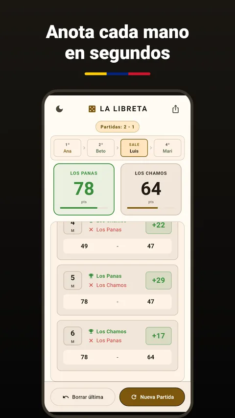
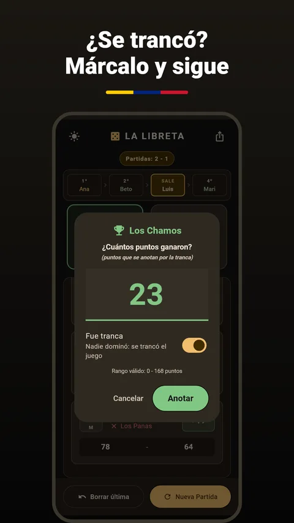
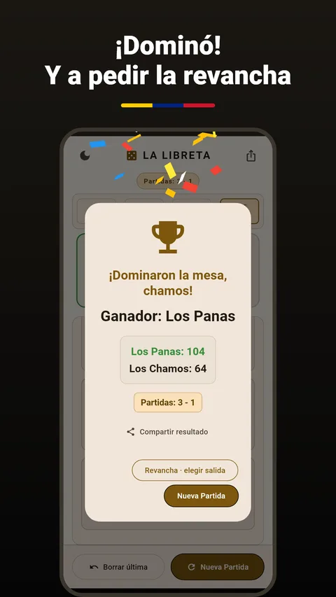

Domino Venezolano
La libreta digital del dominó criollo
Adiós lápiz, adiós servilleta. Anota cada mano, la app lleva la cuenta hasta 100, recuerda quién sale y guarda el marcador de revanchas. Gratis, sin cuentas y sin anuncios.



Instalar en Android
- Toca Descargar para Android y abre el archivo descargado.
- Si el teléfono lo pide, permite instalar apps desconocidas para tu navegador o tu gestor de archivos.
- Toca Instalar. Si Play Protect avisa de que es una app desconocida, es porque no viene de Play Store: elige Instalar de todas formas.
Para actualizar, descarga la nueva versión e instálala encima: tus partidas se mantienen.
Usar en iPhone
- Abre la versión web en Safari.
- Toca el botón Compartir y luego Añadir a pantalla de inicio.
- Ábrela desde su icono, como cualquier app.
La versión web necesita conexión para abrirse. Las partidas se guardan en tu iPhone, dentro de los datos de esa web: si los borras desde los ajustes de Safari, se borran también.
Preguntas frecuentes
¿Cómo anoto una mano?
Toca el panel del equipo que ganó la mano y escribe los puntos.
¿Y si fue tranca?
Al anotar, activa «Fue tranca». La mano queda marcada en la libreta.
Me equivoqué al anotar.
Usa «Borrar última». La app te pide confirmación antes de borrarla.
¿Se pierde la partida si cierro la app?
No. La partida y el marcador de revanchas se guardan en tu teléfono.
¿Cuántos puntos acepta por mano?
De 0 a 168, que es la suma de todas las fichas de un dominó doble seis.
Contacto
¿Encontraste un error o tienes una idea? Escribe a [CORREO PENDIENTE] o abre un aviso en GitHub.